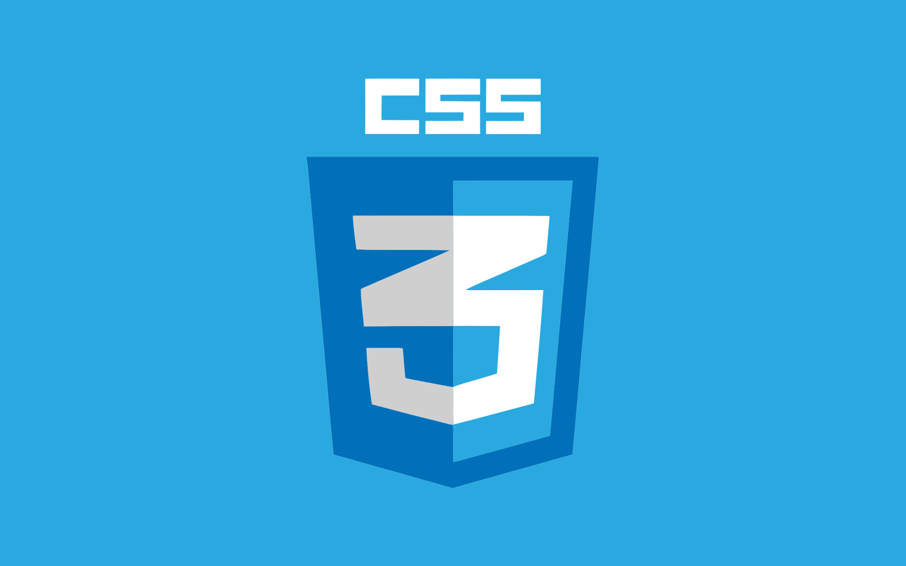

CSS
CSS-Каскадные таблицы стилей (Cascading Style Sheets = CSS) — это язык, который отвечает за визуальное
представление документов пользователю.
Под документом мы будем понимать набор информации о структуре страницы, описываемый языком разметки.
А представление документа пользователю, в свою очередь, означает его преобразование в удобную для восприятия форму.
Браузеры, такие как Firefox, Chrome или Internet Explorer, были созданы для визуального отображения документов, например,
на экране компьютера, проекторе или вывода через принтер.
